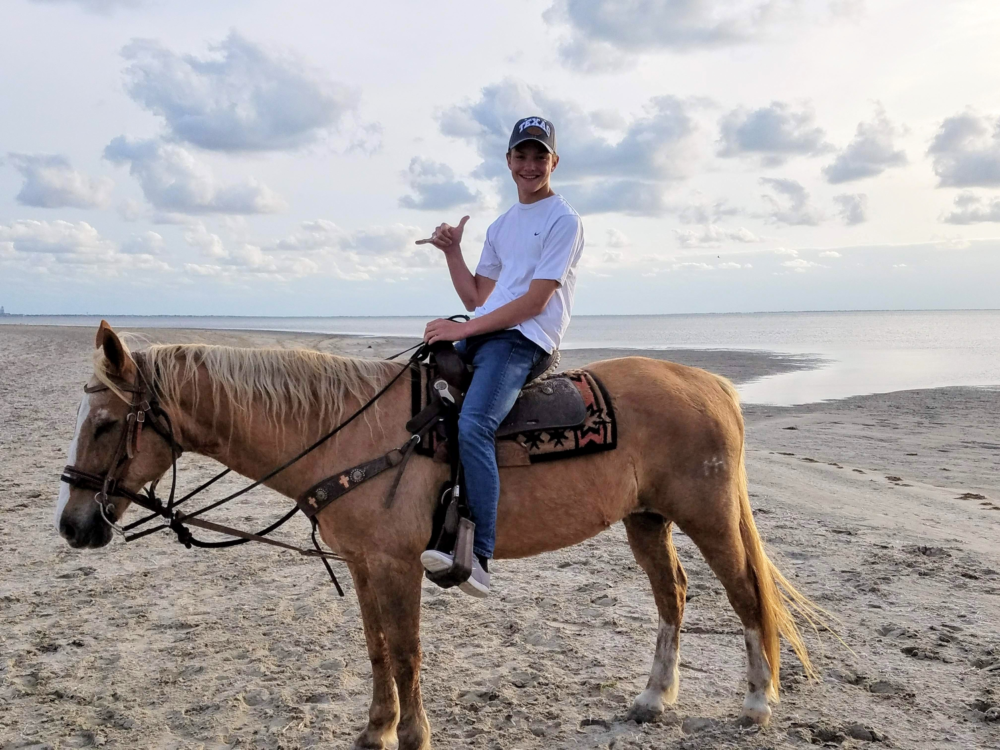
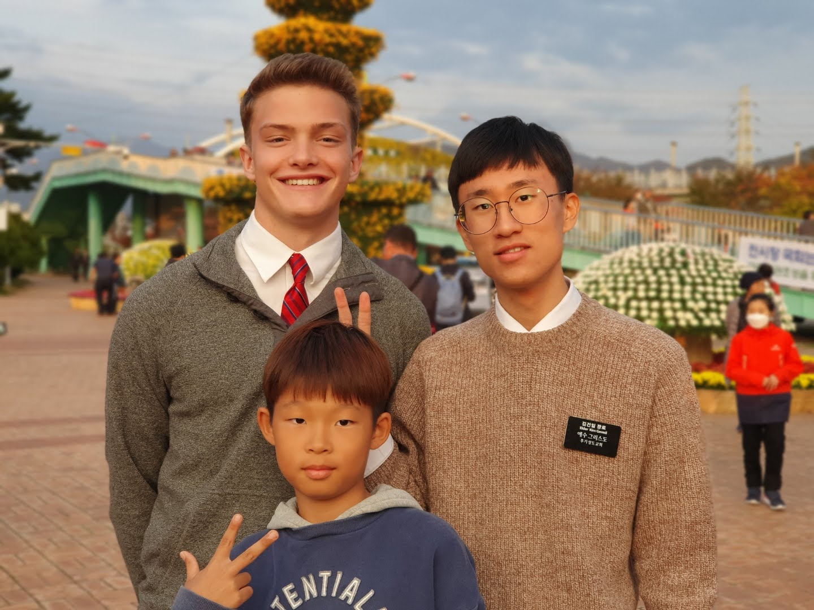
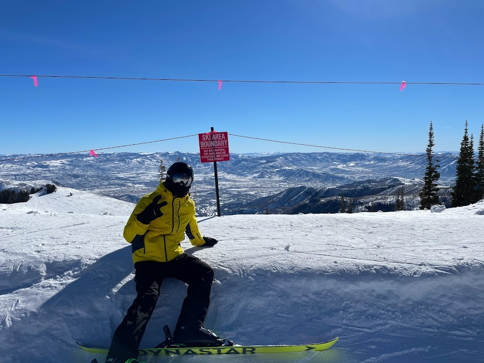
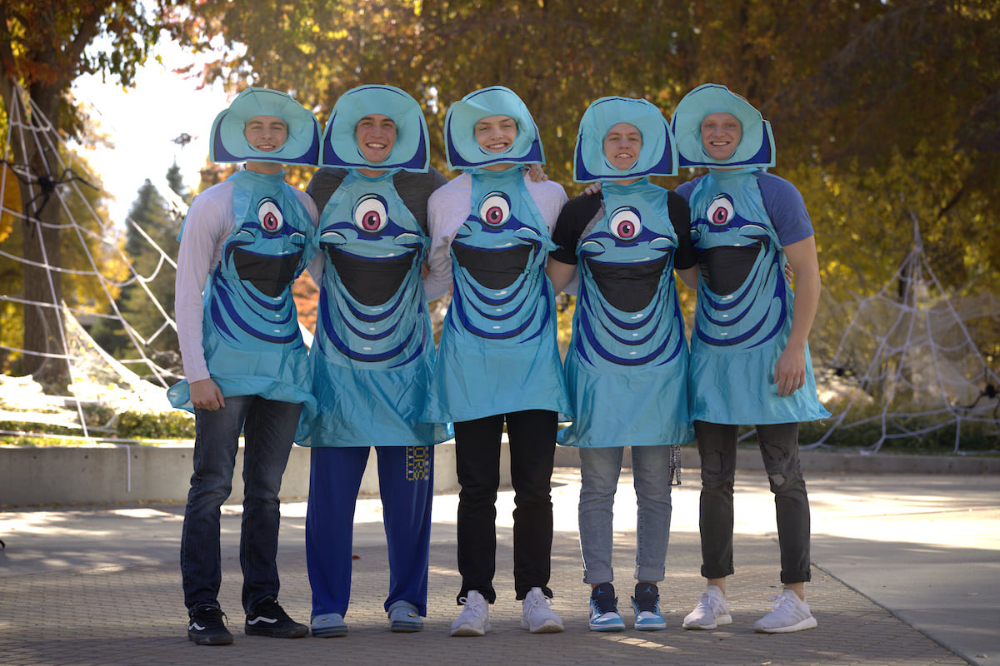

Family

My family is the most important thing to me in my life. I am the middle of 5 children and have two amazing parents. This is a picture of us this last Christmas. We all get along well and have a lot of fun with one another. Some of our favorite things to do together are have big Sunday dinners and to play pickelball.
Texas
Although I was not born here, my family is originally from Texas. We love Texas and visit there a few times a year on average. We will always consider ourselves "Texans." Whether it is down by the border at the beaches of South Padre Island, enjoying Dallas, going to Sea World or the Alamo in San Antonio, or enjoying the beautiful scenery near Austin, Texas will always have a place in our hearts. I have to say that "the Lone Star State" is a big part of my identity.
Korea
Korea is one of my most favorite places in the world. I served an LDS mission in the Korea Busan area (as well as the Louisiana Baton Rouge Mission). Korea and Korean culture has become a large part of who I am. I have continued to study the language extensively and love to be involved in anything that relates to this beautiful nation. I am hoping to one day do international business working out of South Korea. My mission there meant the world to me, and I have some of my strongest relationships with people I met here.
Utah
My family and I have lived in Utah for the past decade, and we absolutely love it here. At first, it was difficult moving from Texas, but this truly has become our home. We love enjoying the outdoors and all four seasons that Utah has to offer. As seen below, skiing is something that I absolutely love about Utah. I have made some incredible friends here and plan to spend a large portion of my life here. Utah is a great place to grow up and has so many great places, attractions, and people to offer to the rest of the world.
Skiing
Skiing is something that I've been doing from a young age. When I'm skiing I feel so much at peace. I love skiing at various resorts across Utah. Whether it is with family or friends, I can always gurantee a great ski experience. One of my most favorite places to ski--and where I group up skiing--is Solitude Mountain Resort. This place not only is a great mountain to ski on, but every time I am there I am reminded about many wonderful memories that were made there.
BYU
"I've now been at BYU for about a year and have absolutely loved it here. The campus environment is amazing and has allowed me to improve myself with secular and spiritual knowledge. I have met some incredible faculty and students here and hope to continue that trend. I am planning on applying to the BYU Marriott School of Business over the next year and am looking forward to what the future holds. I hope everyone has as great of an experience as I do and want to do everything within my power to make that happen for other students.
Intro to BYU
For more information about Brigham Young University, check out the above video.
My Contact Information
Phone Number: 801-111-1111
Email: dantaylor@gmail.com
Address: Brigham Young University